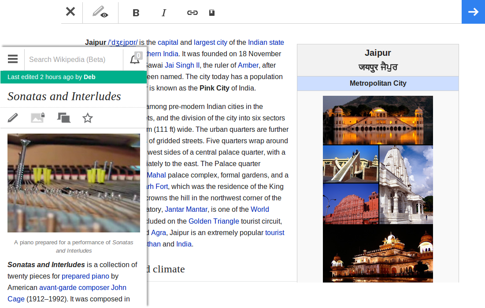
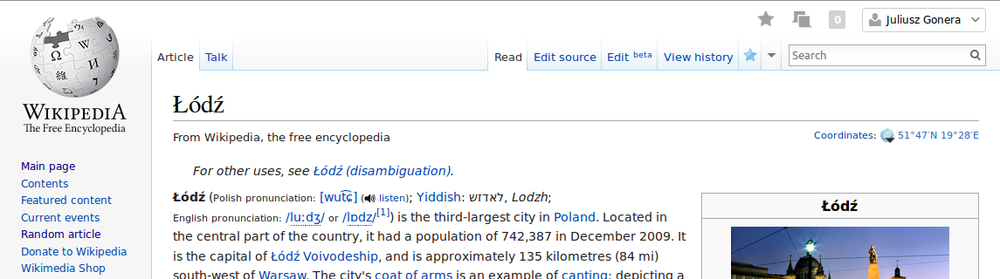
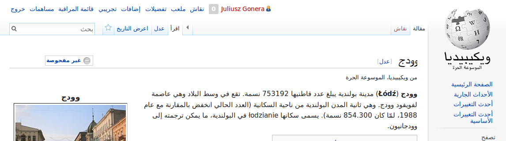

Me
Computer Science graduate at the International Faculty of Engineering, Technical University of Lodz.
Erasmus exchange at Universidad Politécnica de Valencia in Spain.
Worked at the University of Virginia, US.
Currently at the Wikimedia Foundation in San Francisco.
Wikimedia Foundation
Nonprofit charitable organization dedicated to encouraging the growth, development and distribution of free, multilingual, educational content , and to providing the full content of these wiki-based projects to the public free of charge .
http://wikimediafoundation.org/
Wikimedia Foundation
Imagine a world in which every single person on the planet is given free access to the sum of all human knowledge . That's what we're doing.
Jimmy Wales
* not only Wikipedia, more later
So you work for free?
No.
Content is created by volunteers.
Making Wikipedia (and other projects) run is a paid job.
We get funds from donations, both from individuals and companies.
Where?
San Francisco, California, USA (~120 people)
All over the world (~50 people)
Who?
38% are foreigners (non-US citizens)
72% have lived outside their home country
46% are Wikipedians
Some random stats from 2012-2013
Half a billion readers every month......in more than 280 languages .
Individual contributors made 160.2 million edits ,
added 4.9 million Wikipedia articles ,
uploaded 4.3 million images, audio files and video files.
Wikimedia Foundation 2012-2013 Annual Report
* everything public, annual report
Wikipedia rules
Community-driven.
Everyone can edit, edits go live immediately. Be bold .
Content is licensed under free licenses (usually Creative Commons).
Paid editing in most cases is forbidden (conflict of interest).
Behind the courtains
All those web sites run on MediaWiki .
Open source, everybody can contribute.
Supports many languages and scripts, also right-to-left.
Has an extension system.
Main projects
Mobile Web + AppsVisualEditor
Flow
Beta experiments
Mobile Web

* 9 people (2 designers, part time)
* foreground - what we have
* background - tablets, soon
Mobile Apps
* 8 people (2 designers, part time)
* current - PhoneGap, abandoned
* soon - native iOS and Android
Challenges


* symbols that are not universally known or offensive in some cultures
* different fonts/sizes
* RTL languages, sliding menu
Challenges
High traffic.
Community.
Legal matters.
Not enough hands.
* half billion users a month
* community resistant to change (VE, typography)
* people trying to sue Wikipedia
* Facebook's team for like button, our mobile team
Knowledge for everyone
Wikipedia Zero, a program which works with mobile carriers to waive the data charges for accessing Wikipedia on mobile phones.
Tech culture, meetups
Hear people talking about their newest pet projects on the bus.
Go to talks and presentations held by the best people in the industry.
But not only, lots of other events, festivals, happenings.
* not only locals, many conferences
We're hiring!
http://wikimediafoundation.org/wiki/Work_with_us
Working on something truly meaningful.
Awesome work culture and motivated people.
Office in the center of a vibrant city.
Flexible hours.
Working and traveling.
* working remotely over a month a year
* Hong Kong, Mexico
* Partners, Victor
* easier to get visa, anytime
Other ways to contribute
* open source, you can fix a bug in Wikipedia (and other web sites that use MW)!
Thank you
Questions?
* Wikipedia Zero in South Africa https://www.youtube.com/watch?v=0nTVAmstteM